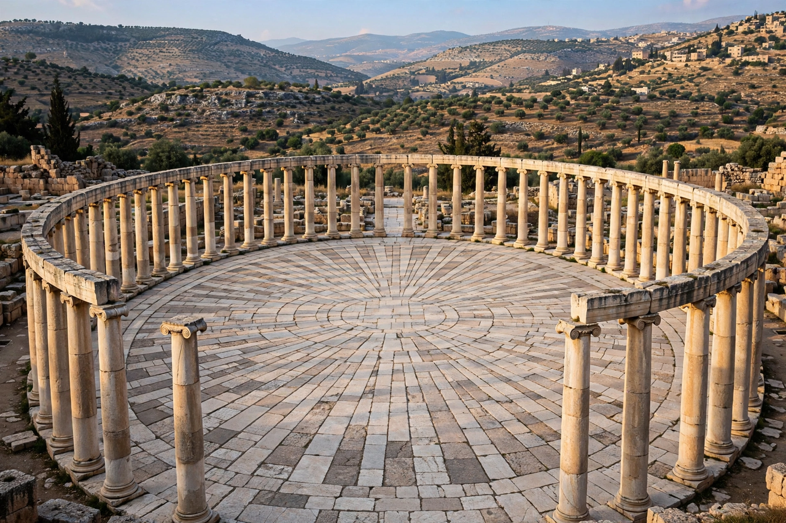

| Oval Plaza (Oval Forum) | |
|---|---|
 The Oval Plaza at Jerash, Jordan | |
| Location | Jerash (ancient Gerasa), Jordan |
| Built | 1st century CE |
| Dimensions | Approx. 90 m × 80 m |
The Oval Plaza, also called the Oval Forum, is a distinctive oval-shaped public square in the Roman city of Gerasa, modern Jerash in Jordan. Built in the 1st century CE, it is one of the most unusual and best-preserved civic spaces of the Roman Near East.
The plaza measures about 90 by 80 metres and is paved with limestone slabs laid in a pattern radiating from the centre. It is ringed by a broad colonnade of 56 Ionic columns, behind which stood the city's shops and public buildings. The oval shape elegantly solved an urban-planning problem: it masked the change in alignment between the city's main colonnaded street (the Cardo) and the older sanctuary of Zeus on the hill above, joining the two axes at a graceful skewed angle.
Gerasa flourished under Roman rule as a member of the Decapolis league of cities. The plaza was laid out early in the city's Roman development, probably in the later 1st century CE, replacing an earlier open area. A fountain and a central monument were added in later centuries. Buried by earthquakes and sand, the plaza was excavated in the 20th century and its fallen columns re-erected, making it the visual centrepiece of the modern archaeological park.